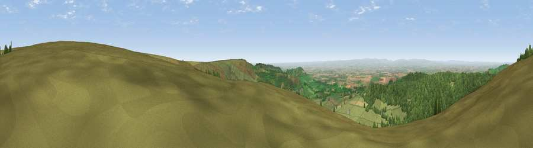

Viewpoint near Nether Silton
#1485 in England · top 6% of its area beats it · near Nether Silton · open accessWhere it is
The exact computed spot (SE 47888 93550). Click the marker for map links.
Public access: this spot lies on mapped open-access land (CRoW Act 2000) — you may roam here on foot. Computed from Natural England's CRoW access layer and OpenStreetMap rights of way — not the legal definitive map. Always verify locally.
The view, rendered

A 360° render of this exact spot computed from the terrain model, tree cover and land cover — summer colours, afternoon light, calibrated against photographs of famous viewpoints. Real trees, hedges and buildings will differ in detail.
The panorama
Grey silhouette: terrain skyline in each direction (720 bearings, Earth curvature and refraction included). Dashed green: skyline with trees (+15 m) and buildings (+8 m) as obstacles. Blue strip: how far the ground is visible on each bearing.
Where the view opens
Wedge length = distance to the farthest visible ground on that bearing (vegetation-aware). Rings at 10, 25 and 50 km.
What fills the view
48% grassland · 38% woodland · 13% cropland · 1% built-up
Angular shares of the visible panorama (visual magnitude), not map area. Landscape diversity 0.45 (0–1 Shannon).
Key numbers
More beautiful places nearby
The staircase of upgrades: each row has a higher view potential than everything closer. Driving times are estimates from straight-line distance, calibrated against real road routing — check an actual route before setting out.
| Place | Direction | Drive | Score |
|---|---|---|---|
| Black Hambleton | N · 1 km | ~3 min | 79.9 |
| Beacon Hill | NNW · 6 km | ~14 min | 84.7 |
| Carlton Bank | NNE · 10 km | ~19 min | 85.1 |
| Roseberry Topping | NNE · 22 km | ~36 min | 85.8 |
| Viewpoint near Lazenby | NNE · 26 km | ~42 min | 86.4 |
| Warsett Hill | NE · 35 km | ~53 min | 86.8 |
| Viewpoint near Easington | NE · 37 km | ~56 min | 90.2 |
| The Knoll | SSW · 416 km | ~395 min | 91.0 |
54.33527, -1.26503 · source: screening · position refined by local search. Computed location — check access rights before visiting.